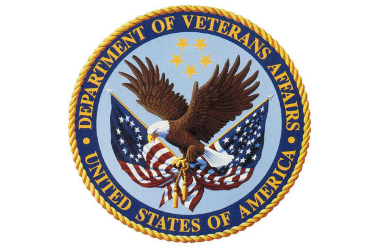

U.S. Code Title 38: Veterans' Benefits

Eligibility
In order to be eligible for Veterans' Benefits in the United States, you have to be an active Service Member, a Veteran, or be a spouse or child of a disabled or deceased Veteran. If you are in one of those categories, you are eligible for Veterans' Benefits and many resources become available to you.
Benefits
Once you are eligible for Veterans' Benefits, the benefits that are available to you are disability compensation, pension, education and training, vetsuccess, life insurance, home loans, health care, burial, and dependents and survivors.
- Disability Compensation -
If a Veteran suffers from a disability, or multiple disabilities, that was caused by their service, worsened during their service, or was related to their service, and they were discharged from service, then they can receive tax-free compensation. The only reason one may not be eligible for disability compensation is if they were discharged due to dishonorable conditions
Veterans who are 65 years of age or older can be eligible for a tax-free pension paid to them if they have very limited or no income. Another way Veterans can be eligible for pension is if they are suffering from a permanent disability that was not related to their service.
Veterans or Service Members who are wanting to continue education or training are eligible for various educational benefits. The four main programs that are available are the Post-9/11 GI Bill, Montgomery GI Bill-Active Duty, Montgomery GI Bill-Selected Reserve, and the Reserve Educational Assistance Program.
- Post-9/11 GI Bill: To be eligible for this GI Bill, they must have served 90 days on or after September 11, 2001, OR received a Purple Heart on or after September 11, 2001 and honorably discharged, OR served a minimum of 30 consecutive days on or after September 11, 2001 and was honorably discharged with a disability connected to the service, OR you are a child or spouse using the benefits that were transferred from qualifying Veteran/Service Member.
- Montgomery GI Bill-Active Duty: For this GI Bill you had to be on active duty for at least two years, plus meet other requirements. There are fours different categories, and depending on which category you have met the criteria for, it will help determine how much money you will get for further education or job training.
- Montgomery GI Bill-Selected Reserve: In order to be eligible for this GI Bill, you must be a member of the Army, Army National Guard, Air Force, Air National Guard, Coast Guard Reserve, or the Marine Corps. Aside from being in one of the above forces, you must also be in a 6-year service obligation to receive up to 36 months of education or job training benefits.
- Reserve Educational Assistance Program: Those who are in the Selected Reserves, Individual Ready Reserve, or the National Guard and are called or ordered to service for war or national emergency are also eligible for up to 36 months of educational benefits.
VetSuccess is a career counseling that helps Veterans suffering from disabilities due to their service time to find a job that will work for them. VetSuccess is also available for people who are no longer on activity duty or if someone is using the education benefits.
There are five different categories of life insurance for Veterans and Service Memebers.
- The "basic" one is for Service Members and it is a low-cost life insurance, called SGLI (Servicemembers' Group Life Insurance).
- The next one is called TSGLI (Servicemembers' Group Life Insurance Traumatic Injury Protection), and it is for Service Members who suffer from larger and/or traumatic injuries. This life insurance level provides payments to the people who are under this category.
- VGLI (Veterans' Group Life Insurance) is for Service Members wanting to switch their SGLI to a lifelong renewable coverage once they are done with their service.
- S-DVI (Service-Disabled Veterans' Insurance), this life insurance is for the Veterans who suffer from a service causing disability.
- Lastly, VMLI (Veterans' Mortgage Life Insurance), is a mortgage protection insurance for disabled Veterans who are approved for a VA Specially Adapted Housing Grant.
Guaranteed Loans - Guarantees a portion of a loan from a private lender to help purchase a home that the Active Duty or Service Member will be living in. They can also guarantee a loan for building and repairing/improving homes.
Refinancing Loans - Veterans Affairs can help refinance a loan for Service Members or Active Duty people.
Specially Adapted Housing Grants - Severely disabled Veterans can be eligible to receive grants to get suitable housing.
A large list of health care services are available to Veterans and Service Members including hospital services, nursing homes, alcohol and drug dependency treatment, medical evaluation, and many other services.
There are different burial and memorials services available to honor deceased Veterans including a inscribed headstone or marker, burial allowance to reimburse some of the funeral/burial expenses, a Presidential Memorial Certificate, American flag to drape the casket, and/or Veterans and dependents allows to be buried in VA national cemeteries.